<?xml version="1.0" encoding="utf-8"?>
<!-- generator="Joomla! - Open Source Content Management" -->
<rss version="2.0" xmlns:atom="http://www.w3.org/2005/Atom">
	<channel>
		<title>Inicio / Noticias </title>
		<description><![CDATA[Sitio Oficial de la Federación de Ajedrez de Panamá]]></description>
		<link>http://www.ajedrezpanama.org/index.php?option=com_content&amp;view=featured</link>
		<lastBuildDate>Sat, 26 Sep 2015 00:19:12 +0000</lastBuildDate>
		<generator>Joomla! - Open Source Content Management</generator>
		<atom:link rel="self" type="application/rss+xml" href="http://www.ajedrezpanama.org/index.php?format=feed&amp;type=rss"/>
		<language>es-es</language>
		<item>
			<title>Nuevo Sitio http://ajedrez-panama.com/</title>
			<link>http://www.ajedrezpanama.org/index.php?option=com_content&amp;view=article&amp;id=92:nuevo-sitio-httpajedrez-panamacom&amp;catid=7&amp;Itemid=121</link>
			<guid isPermaLink="true">http://www.ajedrezpanama.org/index.php?option=com_content&amp;view=article&amp;id=92:nuevo-sitio-httpajedrez-panamacom&amp;catid=7&amp;Itemid=121</guid>
			<description><![CDATA[<div class="feed-description"><h1><strong style="color: #333333; font-family: Tahoma, Helvetica, Arial, sans-serif; font-size: 12.1599998474121px; line-height: 1.3em;"><span style="font-size: 12.0pt; font-family: 'Helvetica','sans-serif'; mso-fareast-font-family: 'Times New Roman'; mso-font-kerning: 18.0pt; mso-ansi-language: ES-PA;" lang="ES-PA">Para información más reciente, por favor dirigirse a </span></strong><a href="http://ajedrez-panama.com/" target="_blank" title="Nuevo Dominio">www.ajedrez-panama.com</a></h1>
<hr />
<p> </p></div>]]></description>
			<author>heroesch@gmail.com (Administrator)</author>
			<category>Destacado</category>
			<category>Inicio / Noticias </category>
			<pubDate>Thu, 28 May 2015 17:17:52 +0000</pubDate>
		</item>
		<item>
			<title>FIDE Trainer Seminar Panama 2015</title>
			<link>http://www.ajedrezpanama.org/index.php?option=com_content&amp;view=article&amp;id=91:fide-trainer-seminar-panama-2015&amp;catid=7&amp;Itemid=121</link>
			<guid isPermaLink="true">http://www.ajedrezpanama.org/index.php?option=com_content&amp;view=article&amp;id=91:fide-trainer-seminar-panama-2015&amp;catid=7&amp;Itemid=121</guid>
			<description><![CDATA[<div class="feed-description"><p>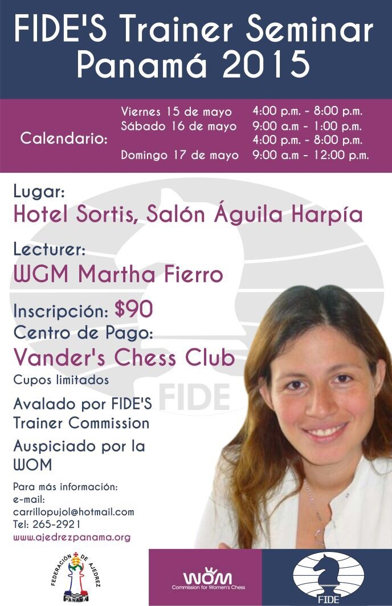</p>
<table class="ecxMsoNormalTable" style="line-height: 21.2999992370605px; color: #444444; font-family: Calibri, sans-serif; font-size: 15px; width: 446.25pt; border-collapse: collapse;" width="595" border="0" cellspacing="0" cellpadding="0">
<tbody style="line-height: 21.2999992370605px;">
<tr style="line-height: 21.2999992370605px; height: 15.75pt;">
<td style="line-height: 21.2999992370605px; width: 446.25pt; border-style: solid; border-color: windowtext black windowtext windowtext; border-width: 1pt; padding: 0in 5.4pt; height: 15.75pt;" colspan="9" width="595">
<p class="ecxMsoNormal" style="line-height: 21.2999992370605px; margin: 0px 0px 1.35em; text-align: center;" align="center"><strong style="line-height: 21.2999992370605px;"><span style="line-height: 15.1466674804688px; font-size: 8pt; font-family: Tahoma, sans-serif; color: #333333;">FIDE Trainers' Commission Seminars List 2015</span></strong></p>
</td>
</tr>
<tr style="line-height: 21.2999992370605px; height: 15pt;">
<td style="line-height: 21.2999992370605px; width: 19.55pt; border-style: none none none solid; border-left-color: windowtext; border-left-width: 1pt; padding: 0in 5.4pt; height: 15pt;" valign="bottom" nowrap="nowrap" width="26">
<p class="ecxMsoNormal" style="line-height: 21.2999992370605px; margin: 0px 0px 1.35em;"> </p>
</td>
<td style="line-height: 21.2999992370605px; width: 50.45pt; padding: 0in 5.4pt; height: 15pt;" valign="bottom" nowrap="nowrap" width="67">
<p class="ecxMsoNormal" style="line-height: 21.2999992370605px; margin: 0px 0px 1.35em;"> </p>
</td>
<td style="line-height: 21.2999992370605px; width: 39pt; padding: 0in 5.4pt; height: 15pt;" valign="bottom" nowrap="nowrap" width="52">
<p class="ecxMsoNormal" style="line-height: 21.2999992370605px; margin: 0px 0px 1.35em;"> </p>
</td>
<td style="line-height: 21.2999992370605px; width: 50.6pt; padding: 0in 5.4pt; height: 15pt;" valign="bottom" nowrap="nowrap" width="67">
<p class="ecxMsoNormal" style="line-height: 21.2999992370605px; margin: 0px 0px 1.35em;"> </p>
</td>
<td style="line-height: 21.2999992370605px; width: 50.6pt; padding: 0in 5.4pt; height: 15pt;" valign="bottom" nowrap="nowrap" width="67">
<p class="ecxMsoNormal" style="line-height: 21.2999992370605px; margin: 0px 0px 1.35em;"> </p>
</td>
<td style="line-height: 21.2999992370605px; width: 64.5pt; padding: 0in 5.4pt; height: 15pt;" valign="bottom" nowrap="nowrap" width="86">
<p class="ecxMsoNormal" style="line-height: 21.2999992370605px; margin: 0px 0px 1.35em;"> </p>
</td>
<td style="line-height: 21.2999992370605px; width: 75pt; padding: 0in 5.4pt; height: 15pt;" valign="bottom" nowrap="nowrap" width="100">
<p class="ecxMsoNormal" style="line-height: 21.2999992370605px; margin: 0px 0px 1.35em;"> </p>
</td>
<td style="line-height: 21.2999992370605px; width: 47.05pt; padding: 0in 5.4pt; height: 15pt;" valign="bottom" nowrap="nowrap" width="63">
<p class="ecxMsoNormal" style="line-height: 21.2999992370605px; margin: 0px 0px 1.35em;"> </p>
</td>
<td style="line-height: 21.2999992370605px; width: 49.5pt; border-style: none solid none none; border-right-color: windowtext; border-right-width: 1pt; padding: 0in 5.4pt; height: 15pt;" valign="bottom" nowrap="nowrap" width="66">
<p class="ecxMsoNormal" style="line-height: 21.2999992370605px; margin: 0px 0px 1.35em;"> </p>
</td>
</tr>
<tr style="line-height: 21.2999992370605px; height: 15pt;">
<td style="line-height: 21.2999992370605px; width: 19.55pt; border-style: none none none solid; border-left-color: windowtext; border-left-width: 1pt; padding: 0in 5.4pt; height: 15pt; background-image: initial; background-attachment: initial; background-size: initial; background-origin: initial; background-clip: initial; background-position: initial; background-repeat: initial;" width="26">
<p class="ecxMsoNormal" style="line-height: 21.2999992370605px; margin: 0px 0px 1.35em;"><strong style="line-height: 21.2999992370605px;"><span style="line-height: 15.1466674804688px; font-size: 8pt; font-family: Tahoma, sans-serif; color: #333333;" lang="EL">N</span></strong></p>
</td>
<td style="line-height: 21.2999992370605px; width: 50.45pt; padding: 0in 5.4pt; height: 15pt; background-image: initial; background-attachment: initial; background-size: initial; background-origin: initial; background-clip: initial; background-position: initial; background-repeat: initial;" width="67">
<p class="ecxMsoNormal" style="line-height: 21.2999992370605px; margin: 0px 0px 1.35em;"><strong style="line-height: 21.2999992370605px;"><span style="line-height: 15.1466674804688px; font-size: 8pt; font-family: Tahoma, sans-serif; color: #333333;" lang="EL">COUNTRY</span></strong></p>
</td>
<td style="line-height: 21.2999992370605px; width: 39pt; padding: 0in 5.4pt; height: 15pt; background-image: initial; background-attachment: initial; background-size: initial; background-origin: initial; background-clip: initial; background-position: initial; background-repeat: initial;" width="52">
<p class="ecxMsoNormal" style="line-height: 21.2999992370605px; margin: 0px 0px 1.35em;"><strong style="line-height: 21.2999992370605px;"><span style="line-height: 15.1466674804688px; font-size: 8pt; font-family: Tahoma, sans-serif; color: #333333;" lang="EL">CITY</span></strong></p>
</td>
<td style="line-height: 21.2999992370605px; width: 50.6pt; padding: 0in 5.4pt; height: 15pt; background-image: initial; background-attachment: initial; background-size: initial; background-origin: initial; background-clip: initial; background-position: initial; background-repeat: initial;" width="67">
<p class="ecxMsoNormal" style="line-height: 21.2999992370605px; margin: 0px 0px 1.35em;"><strong style="line-height: 21.2999992370605px;"><span style="line-height: 15.1466674804688px; font-size: 8pt; font-family: Tahoma, sans-serif; color: #333333;" lang="EL">START</span></strong></p>
</td>
<td style="line-height: 21.2999992370605px; width: 50.6pt; padding: 0in 5.4pt; height: 15pt; background-image: initial; background-attachment: initial; background-size: initial; background-origin: initial; background-clip: initial; background-position: initial; background-repeat: initial;" width="67">
<p class="ecxMsoNormal" style="line-height: 21.2999992370605px; margin: 0px 0px 1.35em;"><strong style="line-height: 21.2999992370605px;"><span style="line-height: 15.1466674804688px; font-size: 8pt; font-family: Tahoma, sans-serif; color: #333333;" lang="EL">END</span></strong></p>
</td>
<td style="line-height: 21.2999992370605px; width: 64.5pt; padding: 0in 5.4pt; height: 15pt; background-image: initial; background-attachment: initial; background-size: initial; background-origin: initial; background-clip: initial; background-position: initial; background-repeat: initial;" width="86">
<p class="ecxMsoNormal" style="line-height: 21.2999992370605px; margin: 0px 0px 1.35em;"><strong style="line-height: 21.2999992370605px;"><span style="line-height: 15.1466674804688px; font-size: 8pt; font-family: Tahoma, sans-serif; color: #333333;" lang="EL">PROSPECTUS</span></strong></p>
</td>
<td style="line-height: 21.2999992370605px; width: 75pt; padding: 0in 5.4pt; height: 15pt; background-image: initial; background-attachment: initial; background-size: initial; background-origin: initial; background-clip: initial; background-position: initial; background-repeat: initial;" width="100">
<p class="ecxMsoNormal" style="line-height: 21.2999992370605px; margin: 0px 0px 1.35em;"><strong style="line-height: 21.2999992370605px;"><span style="line-height: 15.1466674804688px; font-size: 8pt; font-family: Tahoma, sans-serif; color: #333333;">ID-CARD</span></strong></p>
</td>
<td style="line-height: 21.2999992370605px; width: 47.05pt; padding: 0in 5.4pt; height: 15pt; background-image: initial; background-attachment: initial; background-size: initial; background-origin: initial; background-clip: initial; background-position: initial; background-repeat: initial;" width="63">
<p class="ecxMsoNormal" style="line-height: 21.2999992370605px; margin: 0px 0px 1.35em;"><strong style="line-height: 21.2999992370605px;"><span style="line-height: 15.1466674804688px; font-size: 8pt; font-family: Tahoma, sans-serif; color: #333333;">RESULTS</span></strong></p>
</td>
<td style="line-height: 21.2999992370605px; width: 49.5pt; border-style: none solid none none; border-right-color: windowtext; border-right-width: 1pt; padding: 0in 5.4pt; height: 15pt; background-image: initial; background-attachment: initial; background-size: initial; background-origin: initial; background-clip: initial; background-position: initial; background-repeat: initial;" width="66">
<p class="ecxMsoNormal" style="line-height: 21.2999992370605px; margin: 0px 0px 1.35em;"><strong style="line-height: 21.2999992370605px;"><span style="line-height: 15.1466674804688px; font-size: 8pt; font-family: Tahoma, sans-serif; color: #333333;">GALLERY</span></strong></p>
</td>
</tr>
<tr style="line-height: 21.2999992370605px; height: 15pt;">
<td style="line-height: 21.2999992370605px; width: 19.55pt; border-style: none none none solid; border-left-color: windowtext; border-left-width: 1pt; padding: 0in 5.4pt; height: 15pt; background-image: initial; background-attachment: initial; background-size: initial; background-origin: initial; background-clip: initial; background-position: initial; background-repeat: initial;" width="26">
<p class="ecxMsoNormal" style="line-height: 21.2999992370605px; margin: 0px 0px 1.35em; text-align: right;" align="right"><span style="line-height: 15.1466674804688px; font-size: 8pt; font-family: Tahoma, sans-serif; color: #333333;">16</span></p>
</td>
<td style="line-height: 21.2999992370605px; width: 50.45pt; padding: 0in 5.4pt; height: 15pt; background-image: initial; background-attachment: initial; background-size: initial; background-origin: initial; background-clip: initial; background-position: initial; background-repeat: initial;" width="67">
<p class="ecxMsoNormal" style="line-height: 21.2999992370605px; margin: 0px 0px 1.35em;"><span style="line-height: 15.1466674804688px; font-size: 8pt; font-family: Tahoma, sans-serif; color: #333333;">Panama</span></p>
</td>
<td style="line-height: 21.2999992370605px; width: 39pt; padding: 0in 5.4pt; height: 15pt; background-image: initial; background-attachment: initial; background-size: initial; background-origin: initial; background-clip: initial; background-position: initial; background-repeat: initial;" width="52">
<p class="ecxMsoNormal" style="line-height: 21.2999992370605px; margin: 0px 0px 1.35em;"><span style="line-height: 15.1466674804688px; font-size: 8pt; font-family: Tahoma, sans-serif; color: #333333;">Panama</span></p>
</td>
<td style="line-height: 21.2999992370605px; width: 50.6pt; padding: 0in 5.4pt; height: 15pt; background-image: initial; background-attachment: initial; background-size: initial; background-origin: initial; background-clip: initial; background-position: initial; background-repeat: initial;" width="67">
<p class="ecxMsoNormal" style="line-height: 21.2999992370605px; margin: 0px 0px 1.35em;"><span style="line-height: 15.1466674804688px; font-size: 8pt; font-family: Tahoma, sans-serif; color: #333333;">15.05.2015</span></p>
</td>
<td style="line-height: 21.2999992370605px; width: 50.6pt; padding: 0in 5.4pt; height: 15pt; background-image: initial; background-attachment: initial; background-size: initial; background-origin: initial; background-clip: initial; background-position: initial; background-repeat: initial;" width="67">
<p class="ecxMsoNormal" style="line-height: 21.2999992370605px; margin: 0px 0px 1.35em;"><span style="line-height: 15.1466674804688px; font-size: 8pt; font-family: Tahoma, sans-serif; color: #333333;">17.05.2015</span></p>
</td>
<td style="line-height: 21.2999992370605px; width: 64.5pt; padding: 0in 5.4pt; height: 15pt; background-image: initial; background-attachment: initial; background-size: initial; background-origin: initial; background-clip: initial; background-position: initial; background-repeat: initial;" width="86">
<p class="ecxMsoNormal" style="line-height: 21.2999992370605px; margin: 0px 0px 1.35em;"><span style="line-height: 21.2999992370605px; text-decoration: underline;"><span style="line-height: 21.2999992370605px; color: blue;"><span style="line-height: 21.2999992370605px;"><span style="line-height: normal; font-size: small;"><a href="http://trainers.fide.com/images/stories/downloads/TRG_Seminars_2015/FTS-PAN_2015-Prospectus.pdf" target="_blank" style="line-height: 18.4599990844727px; font-weight: inherit; color: #0068cf; cursor: pointer;">FTS-PAN-15</a></span></span></span></span></p>
</td>
<td style="line-height: 21.2999992370605px; width: 75pt; padding: 0in 5.4pt; height: 15pt; background-image: initial; background-attachment: initial; background-size: initial; background-origin: initial; background-clip: initial; background-position: initial; background-repeat: initial;" width="100">
<p class="ecxMsoNormal" style="line-height: 21.2999992370605px; margin: 0px 0px 1.35em;"><span style="line-height: 21.2999992370605px; text-decoration: underline;"><span style="line-height: 21.2999992370605px; color: blue;"><span style="line-height: 21.2999992370605px;"><span style="line-height: normal; font-size: small;"><a href="http://trainers.fide.com/images/stories/downloads/TRG_Seminars_2015/FTS-PAN_2015-ID_Card.Doc" target="_blank" style="line-height: 18.4599990844727px; font-weight: inherit; color: #0068cf; cursor: pointer;">FTS-PAN-15</a></span></span></span></span></p>
</td>
<td style="line-height: 21.2999992370605px; width: 47.05pt; padding: 0in 5.4pt; height: 15pt; background-image: initial; background-attachment: initial; background-size: initial; background-origin: initial; background-clip: initial; background-position: initial; background-repeat: initial;" width="63">
<p class="ecxMsoNormal" style="line-height: 21.2999992370605px; margin: 0px 0px 1.35em;"><span style="line-height: 15.1466674804688px; font-size: 8pt; font-family: Tahoma, sans-serif; color: #333333;">.</span></p>
</td>
<td style="line-height: 21.2999992370605px; width: 49.5pt; border-style: none solid none none; border-right-color: windowtext; border-right-width: 1pt; padding: 0in 5.4pt; height: 15pt; background-image: initial; background-attachment: initial; background-size: initial; background-origin: initial; background-clip: initial; background-position: initial; background-repeat: initial;" width="66">
<p class="ecxMsoNormal" style="line-height: 21.2999992370605px; margin: 0px 0px 1.35em;"><span style="line-height: 15.1466674804688px; font-size: 8pt; font-family: Tahoma, sans-serif; color: #333333;">.</span></p>
</td>
</tr>
<tr style="line-height: 21.2999992370605px; height: 15.75pt;">
<td style="line-height: 21.2999992370605px; width: 19.55pt; border-style: none none solid solid; border-left-color: windowtext; border-left-width: 1pt; border-bottom-color: windowtext; border-bottom-width: 1pt; padding: 0in 5.4pt; height: 15.75pt;" valign="bottom" nowrap="nowrap" width="26">
<p class="ecxMsoNormal" style="line-height: 21.2999992370605px; margin: 0px 0px 1.35em;"> </p>
</td>
<td style="line-height: 21.2999992370605px; width: 50.45pt; border-style: none none solid; border-bottom-color: windowtext; border-bottom-width: 1pt; padding: 0in 5.4pt; height: 15.75pt;" valign="bottom" nowrap="nowrap" width="67">
<p class="ecxMsoNormal" style="line-height: 21.2999992370605px; margin: 0px 0px 1.35em;"> </p>
</td>
<td style="line-height: 21.2999992370605px; width: 39pt; border-style: none none solid; border-bottom-color: windowtext; border-bottom-width: 1pt; padding: 0in 5.4pt; height: 15.75pt;" valign="bottom" nowrap="nowrap" width="52">
<p class="ecxMsoNormal" style="line-height: 21.2999992370605px; margin: 0px 0px 1.35em;"> </p>
</td>
<td style="line-height: 21.2999992370605px; width: 50.6pt; border-style: none none solid; border-bottom-color: windowtext; border-bottom-width: 1pt; padding: 0in 5.4pt; height: 15.75pt;" valign="bottom" nowrap="nowrap" width="67">
<p class="ecxMsoNormal" style="line-height: 21.2999992370605px; margin: 0px 0px 1.35em;"> </p>
</td>
<td style="line-height: 21.2999992370605px; width: 50.6pt; border-style: none none solid; border-bottom-color: windowtext; border-bottom-width: 1pt; padding: 0in 5.4pt; height: 15.75pt;" valign="bottom" nowrap="nowrap" width="67">
<p class="ecxMsoNormal" style="line-height: 21.2999992370605px; margin: 0px 0px 1.35em;"> </p>
</td>
<td style="line-height: 21.2999992370605px; width: 64.5pt; border-style: none none solid; border-bottom-color: windowtext; border-bottom-width: 1pt; padding: 0in 5.4pt; height: 15.75pt;" valign="bottom" nowrap="nowrap" width="86">
<p class="ecxMsoNormal" style="line-height: 21.2999992370605px; margin: 0px 0px 1.35em;"> </p>
</td>
<td style="line-height: 21.2999992370605px; width: 75pt; border-style: none none solid; border-bottom-color: windowtext; border-bottom-width: 1pt; padding: 0in 5.4pt; height: 15.75pt;" valign="bottom" nowrap="nowrap" width="100">
<p class="ecxMsoNormal" style="line-height: 21.2999992370605px; margin: 0px 0px 1.35em;"> </p>
</td>
<td style="line-height: 21.2999992370605px; width: 47.05pt; border-style: none none solid; border-bottom-color: windowtext; border-bottom-width: 1pt; padding: 0in 5.4pt; height: 15.75pt;" valign="bottom" nowrap="nowrap" width="63">
<p class="ecxMsoNormal" style="line-height: 21.2999992370605px; margin: 0px 0px 1.35em;"> </p>
</td>
<td style="line-height: 21.2999992370605px; width: 49.5pt; border-style: none solid solid none; border-bottom-color: windowtext; border-bottom-width: 1pt; border-right-color: windowtext; border-right-width: 1pt; padding: 0in 5.4pt; height: 15.75pt;" valign="bottom" nowrap="nowrap" width="66">
<p class="ecxMsoNormal" style="line-height: 21.2999992370605px; margin: 0px 0px 1.35em;"> </p>
</td>
</tr>
</tbody>
</table>
<p class="ecxMsoNormal" style="line-height: 21.2999992370605px; margin: 0px 0px 1.35em; color: #444444; font-family: Calibri, sans-serif; font-size: 15px;"><br />Las personas que no puedan ir a Van der's Chess Club pueden depositar los $90.00 en el Banco Nacional de Panamá a la cuenta #040000017757 a nombre de la Federación d Ajedrez de Panamá.  Tomarle una foto clara a la volante de depósito y enviarla por e-mail a <span style="line-height: 21.2999992370605px;">CarrilloPujol@hotmail.com y VanDerChessClub@hotmail.com.<br /><br />Mapa para llegar al </span><span style="line-height: 21.2999992370605px;">Salón de Reuniones Águila Harpía del Sortis Hotel, Spa &amp; Casino (Calle 56 Este, Ciudad de Panamá): </span><a class="c_nobdr t_prs" href="http://goo.gl/qVEvXK" target="_blank" style="line-height: 22.7199993133545px; text-decoration: underline; color: #0068cf; cursor: pointer; outline: none; font-size: 12pt;">http://goo.gl/qVEvXK</a><span style="line-height: 21.2999992370605px;">  </span></p>
<hr />
<p class="ecxMsoNormal" style="line-height: 21.2999992370605px; margin: 0px 0px 1.35em; color: #444444; font-family: Calibri, sans-serif; font-size: 15px;"> </p>
<p class="ecxMsoNormal" style="line-height: 21.2999992370605px; margin: 0px 0px 1.35em; color: #444444; font-family: Calibri, sans-serif; font-size: 15px;"><span style="line-height: 21.2999992370605px;"> </span></p></div>]]></description>
			<author>heroesch@gmail.com (Administrator)</author>
			<category>Destacado</category>
			<category>Inicio / Noticias </category>
			<pubDate>Wed, 29 Apr 2015 21:58:58 +0000</pubDate>
		</item>
		<item>
			<title>Primer Grand Prix de Ajedrez Blitz</title>
			<link>http://www.ajedrezpanama.org/index.php?option=com_content&amp;view=article&amp;id=90:primer-grand-prix-de-ajedrez-blitz&amp;catid=7&amp;Itemid=121</link>
			<guid isPermaLink="true">http://www.ajedrezpanama.org/index.php?option=com_content&amp;view=article&amp;id=90:primer-grand-prix-de-ajedrez-blitz&amp;catid=7&amp;Itemid=121</guid>
			<description><![CDATA[<div class="feed-description"><p class="MsoNormal" style="text-align: center;" align="center"><strong><span style="font-size: 28.0pt; mso-bidi-font-size: 11.0pt; line-height: 107%; mso-ansi-language: ES-PA;" lang="ES-PA">Primer Grand Prix de Ajedrez Blitz</span></strong></p>
<p class="MsoNormal"><span lang="ES-PA">El domingo 19 de abril se realizó en la ciudad de La Chorrera, el Primer Grand Prix de Ajedrez Blitz, clasificatorio para la Gran Final de Ajedrez Blitz 2015, a finales de año, bajo la organización del Club de Ajedrez de La Chorrera (CALACH ‘97).  El torneo, contó con la participación del M.I. Jorge Baúles, el M.N. Blas Barría, así como también de otros experimentados ajedrecistas de la provincia de Panamá Oeste como los Expertos Nacionales Félix Bonilla, Abel Oquendo, Carlos Neira, entre otros.</span></p>
<p class="MsoNormal"><span lang="ES-PA">Después de 9 difíciles rondas el M.I. Baúles se alzó con la victoria con un puntaje de 8.5 pts., seguido por el E.N. Félix Bonilla con 6.5 pts., Jesús C. Osorio B. 6.0 pts., y el internacional David Herrera de Colombia con 6.0 puntos, quienes también se clasifican a la final nacional.</span></p>
<p class="MsoNormal"><span lang="ES-PA">Clasificación:</span></p>
<p class="MsoNormal"><span lang="ES-PA">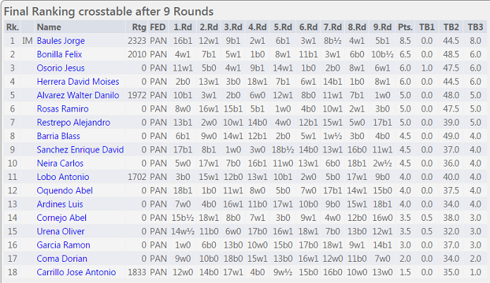</span></p>
<p class="MsoNormal"><span lang="ES-PA"> </span></p>
<p class="MsoNormal"><span style="font-size: 12.1599998474121px; line-height: 1.3em;">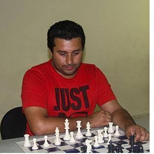</span></p>
<p class="MsoNormal"><span style="font-size: 12.1599998474121px; line-height: 1.3em;">M.I. Jorge Baúles ganador del l Primer Grand Prix de Ajedrez Blitz.</span></p>
<p class="MsoNormal"><span style="font-size: 12.1599998474121px; line-height: 1.3em;"> </span></p>
<p class="MsoNormal"><span lang="ES-PA">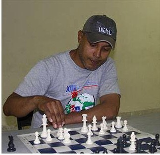</span></p>
<p class="MsoNormal"><span lang="ES-PA">E.N. Félix Bonilla (Campeón Blitz de Panamá Oeste 2015)</span></p>
<p class="MsoNormal"><span lang="ES-PA"> </span></p>
<p class="MsoNormal"><span lang="ES-PA">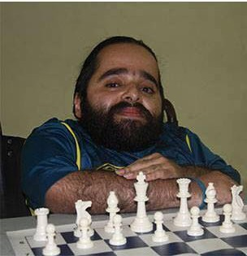</span></p>
<p class="MsoNormal"><span lang="ES-PA">Jesús C. Osorio (Sub-Campeón Blitz de Panamá Oeste 2015)</span></p>
<p class="MsoNormal"><span lang="ES-PA"> </span></p>
<p class="MsoNormal"><span lang="ES-PA">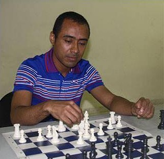</span></p>
<p class="MsoNormal"><span lang="ES-PA">David Herrera</span></p>
<p class="MsoNormal"><span lang="ES-PA">En el duelo local, el E.N. Félix Bonilla logró coronarse como nuevo Campeón Blitz de Panamá Oeste 2015 al vencer en su partida individual al Campeón del Año 2014, Jesús C. Osorio, quien se quedó este año con el Sub-Campeonato.</span></p>
<p class="MsoNormal"><span lang="ES-PA">El Club de Ajedrez de La Chorrera agradece de manera especial al Honorable Tomás Velázquez, Alcalde de La Chorrera, por haber brindado las instalaciones de la Casa de La Cultura para este evento, al Dr. Enrique Sánchez por la donación de los Trofeos, al Ing. Enrique Osorio por la donación de los tableros, y al Presidente de la Federación de Ajedrez de Panamá, el Lic. José Carrillo, por habernos brindado la oportunidad y su confianza para organizar este torneo.</span></p>
<p class="MsoNormal"><span lang="ES-PA">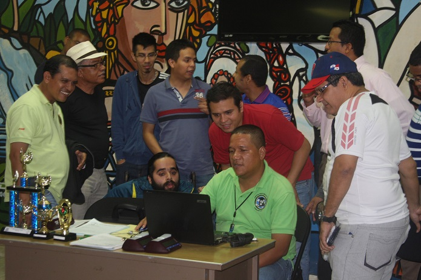Tensión de los jugadores entre rondas.</span></p>
<p class="MsoNormal"><span style="font-size: 12.1599998474121px; line-height: 1.3em;">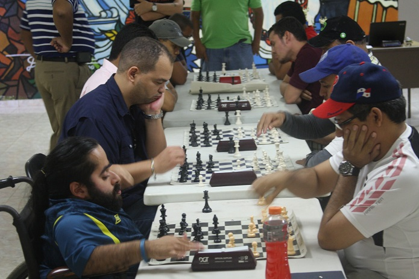Presidente de la FAP haciendo su participación.</span></p>
<p class="MsoNormal" style="text-align: right;"><span style="text-align: right; font-family: arial, helvetica, sans-serif; font-size: 12.8000001907349px; line-height: 21.7600002288818px;">Reportaje: <a href="https://www.facebook.com/jesus.osoriobarahona" target="_blank" title="Jesús Camilo Osorio Barahona">Jesús C. Osorio B</a>.</span></p>
<p> 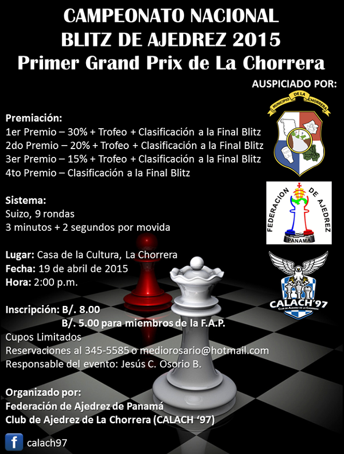</p></div>]]></description>
			<author>heroesch@gmail.com (Administrator)</author>
			<category>Destacado</category>
			<category>Inicio / Noticias </category>
			<pubDate>Wed, 22 Apr 2015 01:54:43 +0000</pubDate>
		</item>
		<item>
			<title>CONVOCATORIA AL CAMPEONATO NACIONAL  DE AJEDREZ MODALIDAD BLITZ  CATEGORIA ABSOLUTA</title>
			<link>http://www.ajedrezpanama.org/index.php?option=com_content&amp;view=article&amp;id=89:convocatoria-al-campeonato-nacional-de-ajedrez-modalidad-blitz-categoria-absoluta&amp;catid=7&amp;Itemid=121</link>
			<guid isPermaLink="true">http://www.ajedrezpanama.org/index.php?option=com_content&amp;view=article&amp;id=89:convocatoria-al-campeonato-nacional-de-ajedrez-modalidad-blitz-categoria-absoluta&amp;catid=7&amp;Itemid=121</guid>
			<description><![CDATA[<div class="feed-description"><p class="MsoNormal" style="text-align: center; mso-pagination: none; mso-layout-grid-align: none; text-autospace: none;" align="center"><strong><span style="font-size: 14.0pt; font-family: 'Arial','sans-serif'; mso-ansi-language: ES;" lang="ES">CONVOCATORIA AL CAMPEONATO NACIONAL  DE AJEDREZ MODALIDAD BLITZ  CATEGORIA ABSOLUTA</span></strong></p>
<p class="MsoNormal" style="text-align: center; mso-pagination: none; mso-layout-grid-align: none; text-autospace: none;" align="center"><strong><span style="font-size: 14.0pt; font-family: 'Arial','sans-serif'; mso-ansi-language: ES;" lang="ES"> </span></strong></p>
<p class="MsoNormal" style="text-align: center; mso-pagination: none; mso-layout-grid-align: none; text-autospace: none;" align="center"><span style="font-size: 14.0pt; font-family: 'Arial','sans-serif'; mso-ansi-language: ES;" lang="ES">La Federación de Ajedrez de Panamá (FAP) tiene el placer de invitar a todos ajedrecistas  a nivel Nacional a participar en la I versión 2015 del Campeonato Nacional de Ajedrez  Modalidad Blitz. </span></p>
<p class="MsoNormal" style="text-align: center; mso-pagination: none; mso-layout-grid-align: none; text-autospace: none;" align="center"><span style="font-size: 14.0pt; font-family: 'Arial','sans-serif'; mso-ansi-language: ES;" lang="ES">(Circuito Blitz Absoluto).</span></p>
<p class="MsoNormal" style="text-align: justify; text-justify: inter-ideograph; mso-pagination: none; mso-layout-grid-align: none; text-autospace: none;"><span style="font-size: 14.0pt; font-family: 'Arial','sans-serif'; mso-ansi-language: ES;" lang="ES"> </span></p>
<p class="MsoNormal" style="text-align: justify; text-justify: inter-ideograph; mso-pagination: none; mso-layout-grid-align: none; text-autospace: none;"><strong><span style="font-size: 14.0pt; font-family: 'Arial','sans-serif'; mso-ansi-language: ES;" lang="ES">1. Participantes: </span></strong></p>
<p class="MsoNormal" style="text-align: justify; text-justify: inter-ideograph; mso-pagination: none; mso-layout-grid-align: none; text-autospace: none;"><span style="font-size: 14.0pt; font-family: 'Arial','sans-serif'; mso-ansi-language: ES;" lang="ES">Pueden participar todos los jugadores y jugadoras con bandera panameña que se encuentren Afiliados a la Federación de Ajedrez de Panamá.</span></p>
<p class="MsoNormal" style="text-align: justify; text-justify: inter-ideograph; mso-pagination: none; mso-layout-grid-align: none; text-autospace: none;"><span style="font-size: 14.0pt; font-family: 'Arial','sans-serif'; mso-ansi-language: ES;" lang="ES"> </span></p>
<p class="MsoNormal" style="text-align: justify; text-justify: inter-ideograph; mso-pagination: none; mso-layout-grid-align: none; text-autospace: none;"><strong><span style="font-size: 14.0pt; font-family: 'Arial','sans-serif'; mso-ansi-language: ES;" lang="ES">2. Formato de Campeonato y Sistemas de Juego</span></strong></p>
<p class="MsoNormal" style="text-align: justify; text-justify: inter-ideograph; mso-pagination: none; mso-layout-grid-align: none; text-autospace: none;"><span style="font-size: 14.0pt; font-family: 'Arial','sans-serif'; mso-ansi-language: ES;" lang="ES">Se jugaran Seis (6) torneos satélites o clasificatorios a nivel nacional los cuales clasificarán a los cuatro (4) primeros lugares de cada evento a una Gran Final. Los 4 jugadores clasificados de cada torneo no podrán participar de los torneos clasificatorios siguientes.</span></p>
<p class="MsoNormal" style="text-align: justify; text-justify: inter-ideograph; mso-pagination: none; mso-layout-grid-align: none; text-autospace: none;"><span style="font-size: 14.0pt; font-family: 'Arial','sans-serif'; mso-ansi-language: ES;" lang="ES">Sistema Suizo a 9 Rondas (Cada clasificatorio)</span></p>
<p class="MsoNormal" style="text-align: justify; text-justify: inter-ideograph; mso-pagination: none; mso-layout-grid-align: none; text-autospace: none;"><span style="font-size: 14.0pt; font-family: 'Arial','sans-serif'; mso-ansi-language: ES;" lang="ES">Sistema Suizo a 11 Rondas (Final).</span></p>
<p class="MsoNormal" style="text-align: justify; text-justify: inter-ideograph; mso-pagination: none; mso-layout-grid-align: none; text-autospace: none;"><span style="font-size: 14.0pt; font-family: 'Arial','sans-serif'; mso-ansi-language: ES;" lang="ES"> </span></p>
<p class="MsoNormal" style="text-align: justify; text-justify: inter-ideograph; mso-pagination: none; mso-layout-grid-align: none; text-autospace: none;"><strong><span style="font-size: 14.0pt; font-family: 'Arial','sans-serif'; mso-ansi-language: ES;" lang="ES">3. Control de tiempo:</span></strong></p>
<p class="MsoNormal" style="text-align: justify; text-justify: inter-ideograph; mso-pagination: none; mso-layout-grid-align: none; text-autospace: none;"><span style="font-size: 14.0pt; font-family: 'Arial','sans-serif'; mso-ansi-language: ES;" lang="ES">Será de tres (3) minutos con dos (2) segundos de incremento para cada jugador; todo el circuito incluyendo también la Gran Final.</span></p>
<p class="MsoNormal" style="text-align: justify; text-justify: inter-ideograph; mso-pagination: none; mso-layout-grid-align: none; text-autospace: none;"><span style="font-size: 14.0pt; font-family: 'Arial','sans-serif'; mso-ansi-language: ES;" lang="ES"> </span></p>
<p class="MsoNormal" style="text-align: justify; text-justify: inter-ideograph; mso-pagination: none; mso-layout-grid-align: none; text-autospace: none;"><strong><span style="font-size: 14.0pt; font-family: 'Arial','sans-serif'; mso-ansi-language: ES;" lang="ES">4. Lugares, Fechas y Sedes:</span></strong></p>
<p class="MsoNormal" style="text-align: justify; text-justify: inter-ideograph; mso-pagination: none; mso-layout-grid-align: none; text-autospace: none;"><strong><span style="font-size: 14.0pt; font-family: 'Arial','sans-serif'; mso-ansi-language: ES;" lang="ES"> </span></strong></p>
<p class="MsoListParagraphCxSpFirst" style="text-align: justify; text-justify: inter-ideograph; text-indent: -.25in; mso-pagination: none; mso-list: l0 level1 lfo1; mso-layout-grid-align: none; text-autospace: none;"><!--[if !supportLists]--><span style="font-size: 14.0pt; font-family: Symbol; mso-fareast-font-family: Symbol; mso-bidi-font-family: Symbol; mso-ansi-language: ES;" lang="ES">·<span style="font-stretch: normal; font-size: 7pt; line-height: normal; font-family: 'Times New Roman';">        </span></span><!--[endif]--><span style="font-size: 14.0pt; font-family: 'Arial','sans-serif'; mso-ansi-language: ES;" lang="ES">I Clasificatorio.  <span style="text-decoration: underline;">Domingo 19 de Abril</span> - Chorrera </span></p>
<p class="MsoListParagraphCxSpLast" style="text-align: justify; text-justify: inter-ideograph; mso-pagination: none; mso-layout-grid-align: none; text-autospace: none;"><span style="font-size: 14.0pt; font-family: 'Arial','sans-serif'; mso-ansi-language: ES;" lang="ES">(Clubes Calach y Pedro Valdés). Resp. Jesus Osorio</span></p>
<p class="MsoNormal" style="text-align: justify; text-justify: inter-ideograph; mso-pagination: none; mso-layout-grid-align: none; text-autospace: none;"><span style="font-size: 14.0pt; font-family: 'Arial','sans-serif'; mso-ansi-language: ES;" lang="ES"> </span></p>
<p class="MsoListParagraph" style="text-align: justify; text-justify: inter-ideograph; text-indent: -.25in; mso-pagination: none; mso-list: l0 level1 lfo1; mso-layout-grid-align: none; text-autospace: none;"><!--[if !supportLists]--><span style="font-size: 14.0pt; font-family: Symbol; mso-fareast-font-family: Symbol; mso-bidi-font-family: Symbol; mso-ansi-language: ES;" lang="ES">·<span style="font-stretch: normal; font-size: 7pt; line-height: normal; font-family: 'Times New Roman';">        </span></span><!--[endif]--><span style="font-size: 14.0pt; font-family: 'Arial','sans-serif'; mso-ansi-language: ES;" lang="ES">II Clasificatorio. <span style="text-decoration: underline;">Domingo 26 de Abril</span>- Vander Chess Club.  Ciudad de Panamá. Resp. Carlos Vander Hans</span></p>
<p class="MsoNormal" style="text-align: justify; text-justify: inter-ideograph; mso-pagination: none; mso-layout-grid-align: none; text-autospace: none;"><span style="font-size: 14.0pt; font-family: 'Arial','sans-serif'; mso-ansi-language: ES;" lang="ES"> </span></p>
<p class="MsoNormal" style="text-align: justify; text-justify: inter-ideograph; mso-pagination: none; mso-layout-grid-align: none; text-autospace: none;"><span style="font-size: 14.0pt; font-family: 'Arial','sans-serif'; mso-ansi-language: ES;" lang="ES">III Clasificatorio<span style="text-decoration: underline;">. Domingo 3 de Mayo</span>. Santiago. Veraguas </span></p>
<p class="MsoNormal" style="text-align: justify; text-justify: inter-ideograph; mso-pagination: none; mso-layout-grid-align: none; text-autospace: none;"><span style="font-size: 14.0pt; font-family: 'Arial','sans-serif'; mso-ansi-language: ES;" lang="ES">(Club Torre Santiago en formación).  Resp. José Riera</span></p>
<p class="MsoNormal" style="text-align: justify; text-justify: inter-ideograph; mso-pagination: none; mso-layout-grid-align: none; text-autospace: none;"><span style="font-size: 14.0pt; font-family: 'Arial','sans-serif'; mso-ansi-language: ES;" lang="ES"> </span></p>
<p class="MsoNormal" style="text-align: justify; text-justify: inter-ideograph; mso-pagination: none; mso-layout-grid-align: none; text-autospace: none;"><span style="font-size: 14.0pt; font-family: 'Arial','sans-serif'; mso-ansi-language: ES;" lang="ES">IV Clasificatorio <span style="text-decoration: underline;">Domingo 10 de Mayo</span>. Club Julio Granda</span></p>
<p class="MsoNormal" style="text-align: justify; text-justify: inter-ideograph; mso-pagination: none; mso-layout-grid-align: none; text-autospace: none;"><span style="font-size: 14.0pt; font-family: 'Arial','sans-serif'; mso-ansi-language: ES;" lang="ES">Panamá.     Resp. Miguel Fuentes</span></p>
<p class="MsoNormal" style="text-align: justify; text-justify: inter-ideograph; mso-pagination: none; mso-layout-grid-align: none; text-autospace: none;"><span style="font-size: 14.0pt; font-family: 'Arial','sans-serif'; mso-ansi-language: ES;" lang="ES"> </span></p>
<p class="MsoNormal" style="text-align: justify; text-justify: inter-ideograph; mso-pagination: none; mso-layout-grid-align: none; text-autospace: none;"><span style="font-size: 14.0pt; font-family: 'Arial','sans-serif'; mso-ansi-language: ES;" lang="ES">V  Clasificatorio <span style="text-decoration: underline;">Domingo 17 de Mayo</span> Van der's Chess Club.</span></p>
<p class="MsoNormal" style="text-align: justify; text-justify: inter-ideograph; mso-pagination: none; mso-layout-grid-align: none; text-autospace: none;"><span style="font-size: 14.0pt; font-family: 'Arial','sans-serif'; mso-ansi-language: ES;" lang="ES">Panamá.  Resp.  Carlos Vander Hans</span></p>
<p class="MsoNormal" style="text-align: justify; text-justify: inter-ideograph; mso-pagination: none; mso-layout-grid-align: none; text-autospace: none;"><span style="font-size: 14.0pt; font-family: 'Arial','sans-serif'; mso-ansi-language: ES;" lang="ES"> </span></p>
<p class="MsoNormal" style="text-align: justify; text-justify: inter-ideograph; mso-pagination: none; mso-layout-grid-align: none; text-autospace: none;"><span style="font-size: 14.0pt; font-family: 'Arial','sans-serif'; mso-ansi-language: ES;" lang="ES">VI  Clasificatorio. <span style="text-decoration: underline;">Domingo 24 de Mayo</span>. Ciudad  de Colon </span></p>
<p class="MsoNormal" style="text-align: justify; text-justify: inter-ideograph; mso-pagination: none; mso-layout-grid-align: none; text-autospace: none;"><span style="font-size: 14.0pt; font-family: 'Arial','sans-serif'; mso-ansi-language: ES;" lang="ES">Club Pro Ajedrez.  Resp. Yaleika Chung o Azhalia Jimenez.</span></p>
<p class="MsoNormal" style="text-align: justify; text-justify: inter-ideograph; mso-pagination: none; mso-layout-grid-align: none; text-autospace: none;"><span style="font-size: 14.0pt; font-family: 'Arial','sans-serif'; mso-ansi-language: ES;" lang="ES"> </span></p>
<p class="MsoNormal" style="text-align: justify; text-justify: inter-ideograph; mso-pagination: none; mso-layout-grid-align: none; text-autospace: none;"><span style="font-size: 14.0pt; font-family: 'Arial','sans-serif'; mso-ansi-language: ES;" lang="ES">Gran Final.    <span style="text-decoration: underline;">Domingo 7 de junio</span>. Chorrera </span></p>
<p class="MsoNormal" style="text-align: justify; text-justify: inter-ideograph; mso-pagination: none; mso-layout-grid-align: none; text-autospace: none;"><span style="font-size: 14.0pt; font-family: 'Arial','sans-serif'; mso-ansi-language: ES;" lang="ES">(Organiza Lobo Chess Club).  Resp. Antonio Lobo</span></p>
<p class="MsoNormal" style="text-align: justify; text-justify: inter-ideograph; mso-pagination: none; mso-layout-grid-align: none; text-autospace: none;"><span style="font-size: 14.0pt; font-family: 'Arial','sans-serif'; mso-ansi-language: ES;" lang="ES"> </span></p>
<p class="MsoNormal" style="text-align: justify; text-justify: inter-ideograph; mso-pagination: none; mso-layout-grid-align: none; text-autospace: none;"><strong><span style="font-size: 14.0pt; font-family: 'Arial','sans-serif'; mso-ansi-language: ES;" lang="ES">5. Inscripciones y Costo:</span></strong></p>
<p class="MsoNormal" style="text-align: justify; text-justify: inter-ideograph; mso-pagination: none; mso-layout-grid-align: none; text-autospace: none;"><span style="font-size: 14.0pt; font-family: 'Arial','sans-serif'; mso-ansi-language: ES;" lang="ES">La cuota de inscripción de cada torneo  será <span style="text-decoration: underline;">Ocho (B/.8.00) Balboas</span>.</span></p>
<p class="MsoNormal" style="text-align: justify; text-justify: inter-ideograph; mso-pagination: none; mso-layout-grid-align: none; text-autospace: none;"><span style="font-size: 14.0pt; font-family: 'Arial','sans-serif'; mso-ansi-language: ES;" lang="ES">Quienes posean Membresía de la Federación: <span style="text-decoration: underline;">Cinco B/.5.00 Balboas</span>.</span></p>
<p class="MsoNormal" style="text-align: justify; text-justify: inter-ideograph; mso-pagination: none; mso-layout-grid-align: none; text-autospace: none;"><span style="font-size: 14.0pt; font-family: 'Arial','sans-serif'; mso-ansi-language: ES;" lang="ES"> </span></p>
<p class="MsoNormal" style="text-align: justify; text-justify: inter-ideograph; mso-pagination: none; mso-layout-grid-align: none; text-autospace: none;"><strong><span style="font-size: 14.0pt; font-family: 'Arial','sans-serif'; mso-ansi-language: ES;" lang="ES">6. Premiación:</span></strong></p>
<p class="MsoNormal" style="text-align: justify; text-justify: inter-ideograph; mso-pagination: none; mso-layout-grid-align: none; text-autospace: none;"><span style="font-size: 14.0pt; font-family: 'Arial','sans-serif'; mso-ansi-language: ES;" lang="ES">En cada uno de los clasificatorios se estará premiando a los  3 primeros lugares en Efectivo;   </span></p>
<p class="MsoNormal" style="text-align: justify; text-justify: inter-ideograph; mso-pagination: none; mso-layout-grid-align: none; text-autospace: none;"><span style="font-size: 14.0pt; font-family: 'Arial','sans-serif'; mso-ansi-language: ES;" lang="ES">Adicionalmente, los clasificados tendrán el derecho de competir por el acumulado  de la Gran Final; </span></p>
<p class="MsoNormal" style="text-align: justify; text-justify: inter-ideograph; mso-pagination: none; mso-layout-grid-align: none; text-autospace: none;"><span style="font-size: 14.0pt; font-family: 'Arial','sans-serif'; mso-ansi-language: ES;" lang="ES"> </span></p>
<p class="MsoNormal" style="text-align: justify; text-justify: inter-ideograph; mso-pagination: none; mso-layout-grid-align: none; text-autospace: none;"><span style="font-size: 14.0pt; font-family: 'Arial','sans-serif'; mso-ansi-language: ES;" lang="ES">Cada sede deberá anunciar los premios respectivos basándose en los siguientes <span style="text-decoration: underline;">porcentajes:</span></span></p>
<p class="MsoNormal" style="text-align: justify; text-justify: inter-ideograph; mso-pagination: none; mso-layout-grid-align: none; text-autospace: none;"><span style="font-size: 14.0pt; font-family: 'Arial','sans-serif'; mso-ansi-language: ES;" lang="ES">65%  de las inscripción asignada a premios del respectivo torneo </span></p>
<p class="MsoNormal" style="text-align: justify; text-justify: inter-ideograph; mso-pagination: none; mso-layout-grid-align: none; text-autospace: none;"><span style="font-size: 14.0pt; font-family: 'Arial','sans-serif'; mso-ansi-language: ES;" lang="ES">35%  acumulado para la Gran Final.</span></p>
<p class="MsoNormal" style="text-align: justify; text-justify: inter-ideograph; mso-pagination: none; mso-layout-grid-align: none; text-autospace: none;"><span style="font-size: 14.0pt; font-family: 'Arial','sans-serif'; mso-ansi-language: ES;" lang="ES"> </span></p>
<p class="MsoNormal" style="text-align: justify; text-justify: inter-ideograph; mso-pagination: none; mso-layout-grid-align: none; text-autospace: none;"><span style="font-size: 14.0pt; font-family: 'Arial','sans-serif'; mso-ansi-language: ES;" lang="ES">Se garantiza una suma de Quinientos B/.500 Balboas a la <span style="text-decoration: underline;">Gran Final</span> mas lo acumulado en el circuito.</span></p>
<p class="MsoNormal" style="text-align: justify; text-justify: inter-ideograph; mso-pagination: none; mso-layout-grid-align: none; text-autospace: none;"><span style="font-size: 14.0pt; font-family: 'Arial','sans-serif'; mso-ansi-language: ES;" lang="ES">La distribución de premios de la gran final será la siguiente </span></p>
<p class="MsoNormal" style="text-align: justify; text-justify: inter-ideograph; mso-pagination: none; mso-layout-grid-align: none; text-autospace: none;"><span style="font-size: 14.0pt; font-family: 'Arial','sans-serif'; mso-ansi-language: ES;" lang="ES">55% al primer lugar </span></p>
<p class="MsoNormal" style="text-align: justify; text-justify: inter-ideograph; mso-pagination: none; mso-layout-grid-align: none; text-autospace: none;"><span style="font-size: 14.0pt; font-family: 'Arial','sans-serif'; mso-ansi-language: ES;" lang="ES">20% al segundo lugar</span></p>
<p class="MsoNormal" style="text-align: justify; text-justify: inter-ideograph; mso-pagination: none; mso-layout-grid-align: none; text-autospace: none;"><span style="font-size: 14.0pt; font-family: 'Arial','sans-serif'; mso-ansi-language: ES;" lang="ES">10% al tercero lugar</span></p>
<p class="MsoNormal" style="text-align: justify; text-justify: inter-ideograph; mso-pagination: none; mso-layout-grid-align: none; text-autospace: none;"><span style="font-size: 14.0pt; font-family: 'Arial','sans-serif'; mso-ansi-language: ES;" lang="ES">8% al cuarto  lugar  </span></p>
<p class="MsoNormal" style="text-align: justify; text-justify: inter-ideograph; mso-pagination: none; mso-layout-grid-align: none; text-autospace: none;"><span style="font-size: 14.0pt; font-family: 'Arial','sans-serif'; mso-ansi-language: ES;" lang="ES">7% al quinto lugar  </span></p>
<p class="MsoNormal" style="text-align: justify; text-justify: inter-ideograph; mso-pagination: none; mso-layout-grid-align: none; text-autospace: none;"><span style="font-size: 14.0pt; font-family: 'Arial','sans-serif'; mso-ansi-language: ES;" lang="ES"> </span></p>
<p class="MsoNormal" style="text-align: justify; text-justify: inter-ideograph; mso-pagination: none; mso-layout-grid-align: none; text-autospace: none;"><strong><span style="font-size: 14.0pt; font-family: 'Arial','sans-serif'; mso-ansi-language: ES;" lang="ES">7. Desempates</span></strong><span style="font-size: 14.0pt; font-family: 'Arial','sans-serif'; mso-ansi-language: ES;" lang="ES">: los siguientes criterios de desempates serán aplicados en todo las clasificatorias del circuito y la Gran Final </span></p>
<p class="MsoNormal" style="text-align: justify; text-justify: inter-ideograph; mso-pagination: none; mso-layout-grid-align: none; text-autospace: none;"><span style="font-size: 14.0pt; font-family: 'Arial','sans-serif'; mso-ansi-language: ES;" lang="ES">a) Partida individual </span></p>
<p class="MsoNormal" style="text-align: justify; text-justify: inter-ideograph; mso-pagination: none; mso-layout-grid-align: none; text-autospace: none;"><span style="font-size: 14.0pt; font-family: 'Arial','sans-serif'; mso-ansi-language: ES;" lang="ES">b) Buchholz  </span></p>
<p class="MsoNormal" style="text-align: justify; text-justify: inter-ideograph; mso-pagination: none; mso-layout-grid-align: none; text-autospace: none;"><span style="font-size: 14.0pt; font-family: 'Arial','sans-serif'; mso-ansi-language: ES;" lang="ES">c) Números de victorias </span></p>
<p class="MsoNormal" style="text-align: justify; text-justify: inter-ideograph; mso-pagination: none; mso-layout-grid-align: none; text-autospace: none;"><span style="font-size: 14.0pt; font-family: 'Arial','sans-serif'; mso-ansi-language: ES;" lang="ES">d) Progresivo</span></p>
<p class="MsoNormal" style="text-align: justify; text-justify: inter-ideograph; mso-pagination: none; mso-layout-grid-align: none; text-autospace: none;"><span style="font-size: 14.0pt; font-family: 'Arial','sans-serif'; mso-ansi-language: ES;" lang="ES">e) Armagedón (se sorteará los colores para la partida)</span></p>
<p class="MsoNormal" style="text-align: justify; text-justify: inter-ideograph; mso-pagination: none; mso-layout-grid-align: none; text-autospace: none;"><span style="font-size: 14.0pt; font-family: 'Arial','sans-serif'; mso-ansi-language: ES;" lang="ES"> </span></p>
<p class="MsoNormal" style="text-align: justify; text-justify: inter-ideograph; mso-pagination: none; mso-layout-grid-align: none; text-autospace: none;"><strong><span style="font-size: 14.0pt; font-family: 'Arial','sans-serif'; mso-ansi-language: ES;" lang="ES">8. Coordinación y  Arbitraje</span></strong><span style="font-size: 14.0pt; font-family: 'Arial','sans-serif'; mso-ansi-language: ES;" lang="ES">: </span></p>
<p class="MsoNormal" style="text-align: justify; text-justify: inter-ideograph; mso-pagination: none; mso-layout-grid-align: none; text-autospace: none;"><span style="font-size: 14.0pt; font-family: 'Arial','sans-serif'; mso-ansi-language: ES;" lang="ES">Cada Clasificatorio deberá contar con un <span style="text-decoration: underline;">Arbitro Fide</span> (AF).</span></p>
<p class="MsoNormal" style="text-align: justify; text-justify: inter-ideograph; mso-pagination: none; mso-layout-grid-align: none; text-autospace: none;"><span style="text-decoration: underline;"><span style="font-size: 14.0pt; font-family: 'Arial','sans-serif'; mso-ansi-language: ES;" lang="ES">Coordinador General</span></span><span style="font-size: 14.0pt; font-family: 'Arial','sans-serif'; mso-ansi-language: ES;" lang="ES">:  MF Jorge Sánchez  69672665.</span></p>
<p class="MsoNormal" style="text-align: justify; text-justify: inter-ideograph; mso-pagination: none; mso-layout-grid-align: none; text-autospace: none;"><span style="font-size: 14.0pt; font-family: 'Arial','sans-serif'; mso-ansi-language: ES;" lang="ES">  </span></p>
<p class="MsoNormal" style="text-align: justify; text-justify: inter-ideograph; mso-pagination: none; mso-layout-grid-align: none; text-autospace: none;"><strong><span style="font-size: 14.0pt; font-family: 'Arial','sans-serif'; mso-ansi-language: ES;" lang="ES">9. Reglamentos </span></strong></p>
<p class="MsoNormal" style="text-align: justify; text-justify: inter-ideograph; mso-pagination: none; mso-layout-grid-align: none; text-autospace: none;"><span style="font-size: 14.0pt; font-family: 'Arial','sans-serif'; mso-ansi-language: ES;" lang="ES">Se aplicarán: </span></p>
<p class="MsoNormal" style="text-align: justify; text-justify: inter-ideograph; mso-pagination: none; mso-layout-grid-align: none; text-autospace: none;"><span style="font-size: 14.0pt; font-family: 'Arial','sans-serif'; mso-ansi-language: ES;" lang="ES">a)  Leyes del Ajedrez de la FIDE actualizadas y vigentes.  </span></p>
<p class="MsoNormal"><span style="font-family: 'Arial','sans-serif';" lang="ES-PA"> </span></p>
<p class="MsoNormal"><strong><span style="font-size: 14.0pt; font-family: 'Arial','sans-serif';" lang="ES-PA">10. Otras Disposiciones</span></strong></p>
<p class="MsoNormal"><span style="font-size: 14.0pt; font-family: 'Arial','sans-serif';" lang="ES-PA">Cada Torneo Clasificatorio (Satelites a la Final) tendrá una persona responsable y un club organizador (inscrito o en formación). Quienes se encargaran de: </span></p>
<p class="MsoListParagraphCxSpFirst" style="margin-left: 21.3pt; mso-add-space: auto; text-indent: -.25in; mso-list: l0 level1 lfo1;"><!--[if !supportLists]--><span style="font-size: 14.0pt; font-family: Symbol; mso-fareast-font-family: Symbol; mso-bidi-font-family: Symbol;" lang="ES-PA">·<span style="font-stretch: normal; font-size: 7pt; line-height: normal; font-family: 'Times New Roman';">        </span></span><!--[endif]--><span style="font-size: 14.0pt; font-family: 'Arial','sans-serif';" lang="ES-PA">Contratar el Arbitro Fide para su torneo</span></p>
<p class="MsoListParagraphCxSpLast" style="margin-left: 21.3pt; mso-add-space: auto; text-indent: -.25in; mso-list: l0 level1 lfo1;"><!--[if !supportLists]--><span style="font-size: 14.0pt; font-family: Symbol; mso-fareast-font-family: Symbol; mso-bidi-font-family: Symbol;" lang="ES-PA">·<span style="font-stretch: normal; font-size: 7pt; line-height: normal; font-family: 'Times New Roman';">        </span></span><!--[endif]--><span style="font-size: 14.0pt; font-family: 'Arial','sans-serif';" lang="ES-PA">Anunciar el lugar exacto, la distribución de premios y las horas de inicio</span></p>
<p class="MsoNormal"><span style="font-size: 14.0pt; font-family: 'Arial','sans-serif';" lang="ES-PA"> </span></p>
<p class="MsoNormal" style="text-align: justify; text-justify: inter-ideograph;"><span style="font-size: 14.0pt; font-family: 'Arial','sans-serif';" lang="ES-PA">AJEDRECISTA:   TE RECOMENDAMOS PARTICIPAR DE ESTE PRIMER TORNEO Y TOMAR LA OPCION DE LA <span style="text-decoration: underline;">MEMBRESIA ANUAL</span> DE LA FEDERACION DONDE OBTENDRAS DESCUENTOS EN LAS ACTIVIDADES Y TORNEOS!!     </span></p>
<p class="MsoNormal" style="text-align: justify; text-justify: inter-ideograph;"><span style="font-size: 14.0pt; font-family: 'Arial','sans-serif';" lang="ES-PA"> </span></p>
<p class="MsoNormal" style="text-align: justify; text-justify: inter-ideograph;"><span style="font-size: 14.0pt; font-family: 'Arial','sans-serif';" lang="ES-PA">ENCARGADO EL TESORERO DE LA FEDERACION CARLOS VANDER HANS</span></p>
<p> </p>
<p class="MsoNormal" style="text-align: justify; text-justify: inter-ideograph;"><span style="font-size: 14.0pt; font-family: 'Arial','sans-serif';" lang="ES-PA"> </span></p>
<hr />
<p class="MsoNormal" style="text-align: justify; text-justify: inter-ideograph;"> </p></div>]]></description>
			<author>heroesch@gmail.com (Administrator)</author>
			<category>Destacado</category>
			<category>Inicio / Noticias </category>
			<pubDate>Fri, 10 Apr 2015 23:28:45 +0000</pubDate>
		</item>
		<item>
			<title>Resumen de las Elecciones de la nueva Junta Directiva de la  Federación de Ajedrez de Panamá</title>
			<link>http://www.ajedrezpanama.org/index.php?option=com_content&amp;view=article&amp;id=88:resumen-de-las-elecciones-de-la-nueva-junta-directiva-de-la-federacion-de-ajedrez-de-panama&amp;catid=7&amp;Itemid=121</link>
			<guid isPermaLink="true">http://www.ajedrezpanama.org/index.php?option=com_content&amp;view=article&amp;id=88:resumen-de-las-elecciones-de-la-nueva-junta-directiva-de-la-federacion-de-ajedrez-de-panama&amp;catid=7&amp;Itemid=121</guid>
			<description><![CDATA[<div class="feed-description"><p class="MsoNormal" style="text-align: center;" align="center"><strong><span style="font-size: 14.0pt;" lang="ES-PA">Resumen de las Elecciones de la nueva Junta Directiva de la</span></strong></p>
<p class="MsoNormal" style="text-align: center;" align="center"><strong><span style="font-size: 14.0pt;" lang="ES-PA">Federación de Ajedrez de Panamá</span></strong></p>
<p class="MsoNormal" style="text-align: justify;"><span lang="ES-PA"> </span></p>
<p class="MsoNormal" style="text-align: justify;"><span style="font-size: 14.0pt;" lang="ES-PA">El pasado sábado 28 de marzo tuvo lugar en el salón Tactic del Hotel Aloft Panamá, desde las 5:00 p.m. las elecciones internas de la Federación de Ajedrez de Panamá (FAP). A la misma asistieron la Junta Directiva de Ajedrez saliente, la Lic. Briseida Pérez -  R<a name="__DdeLink__17_1643973543"></a>epresentante de Pandeportes, el Ing. Irvin A. Halman - administrador general de la Autoridad Nacional para la Innovación Gubernamental (AIG), la Lic. Carmen Álvarez - Representante de los no videntes, los presidentes de las ligas de las provincias de Chiriquí, Bocas del Toro y Colón, las empresas Panama Chess 4 Kids y Chess Logistic, los representantes de las futuras ligas de Veraguas y Panamá Oeste.</span></p>
<p class="MsoNormal" style="text-align: justify;"><span style="font-size: 14.0pt;" lang="ES-PA"> </span></p>
<p class="MsoNormal" style="text-align: justify;"><span style="font-size: 14.0pt;" lang="ES-PA">En primer lugar el Presidente de la Junta Directiva saliente, el arquitecto Alhan E. Carrera O., dio a conocer el orden del día: Invocación religiosa, palabras por el Presidente saliente, revisión de documentos por parte de la representante autorizada por Pandeportes, convocar a elecciones, elección anunciada por el presidente interino Osvaldo Montenegro y palabras por el <a name="__UnoMark__3_46849500"></a>Presidente electo.</span></p>
<p class="MsoNormal" style="text-align: justify;"><span style="font-size: 14.0pt;" lang="ES-PA"> </span></p>
<p class="MsoNormal" style="text-align: justify;"><span style="font-size: 14.0pt;" lang="ES-PA">El Arq. Carrera, como Presidente saliente, empezó diciendo que el ajedrez panameño ha evolucionado enormemente en los últimos diez años. Enfatizó que datos estadísticos en el rating FIDE, hasta el año 2006, se registraban 68 atletas de los cuales sólo 2 tenían título de maestro FIDE. Recalcó que a partir del 2006 al 2015 se registró 283 atletas de los cuales 6 son maestros FIDE, estos son: Amhed Cedeño, Luis Esquivel, Jorge Luis Arosemena, Patrick Aizprua, Jorge Sanchez y Adrián Fuentes; y un maestro internacional y campeón centroamericano en el Subzonal 2008, el cual es Jorge Baúles. También manifestó que hay dos atletas becados por Pandeportes: Alexei Tapia y Robert Sun.</span></p>
<p class="MsoNormal" style="text-align: justify;"><span style="font-size: 14.0pt;" lang="ES-PA"> </span></p>
<p class="MsoNormal" style="text-align: justify;"><span style="font-size: 14.0pt;" lang="ES-PA">Carrera expuso que se realizaron alrededor de doce eventos internacionales, campeonatos nacionales, infantiles, juveniles, absolutos y femeninos, campeonatos para atletas no videntes, torneos y simultáneas en las cárceles de Tinajita, La Joya y El Renacer; cursos y seminarios de ajedrez.</span></p>
<p class="MsoNormal" style="text-align: justify;"><span style="font-size: 14.0pt;" lang="ES-PA"> </span></p>
<p class="MsoNormal" style="text-align: justify;"><span style="font-size: 14.0pt;" lang="ES-PA">Finalmente el arquitecto enfatizó que se dejaba una estructura fuerte y exhortó a la nueva Junta Directiva que continúe el trabajo y que sigan fortaleciendo esa estructura. </span></p>
<p class="MsoNormal" style="text-align: justify;"><span style="font-size: 14.0pt;" lang="ES-PA"> </span></p>
<p class="MsoNormal" style="text-align: justify;"><span style="font-size: 14.0pt;" lang="ES-PA">Posteriormente la Lic. Briseida Pérez realizó la revisión respectiva de los documentos, acreditando a los delegados de las provincias de Bocas del Toro, Chiriquí y Colón, para ejercer su derecho al sufragio. Se convocó a elecciones y se le permitió al público un receso mientras los presidentes de las diferentes ligas provinciales ejercieron su voto. Pasados quince minutos, el Presidente interino Osvaldo Montenegro anunció unánimemente la elección de José Carrillo Pujol como el nuevo Presidente de la Federación de Ajedrez de Panamá.</span></p>
<p class="MsoNormal" style="text-align: justify;"><span style="font-size: 14.0pt;" lang="ES-PA"> </span></p>
<p class="MsoNormal" style="text-align: justify;"><span style="font-size: 14.0pt;" lang="ES-PA">El presidente electo, manifestó que contaba con un buen equipo de trabajo y la experiencia suficiente para dirigir de la mejor manera el Ajedrez en la República de Panamá. A continuación presentó al Prof. Juan Ramón Collantes (Ph.D.), su vicepresidente y mencionó que representará a Panamá como Delegado en el Congreso FIDE de Dubái en septiembre; al Prof. Carlos van der Hans como su tesorero, a quien se le hizo entrega de una placa de reconocimiento como Presidente Vitalicio por sus años de servicio y entrega en el ámbito del ajedrez nacional; al Arq. Alhan Carrera como Fiscal; al Sr. Agustín Cantilo-Paz como Vocal; al Lic. Blass Barría como Vocal; al Prof. Juan Rivera como Vocal y por último expresó que se sentía complacido ya que cuenta con dos jóvenes baluartes del país como lo son la Dra. Raisa Barría vocal, campeona nacional femenina en muchas ocasiones y el Lic. Bryan Mathews como su secretario general, que en varias ocasiones ha sido selección nacional del equipo olímpico mayor de ajedrez.</span><span style="font-size: 14pt; line-height: 1.3em; text-align: center;"> </span></p>
<p class="MsoNormal" style="text-align: center;" align="center"><span style="font-size: 14.0pt;" lang="ES-PA"> 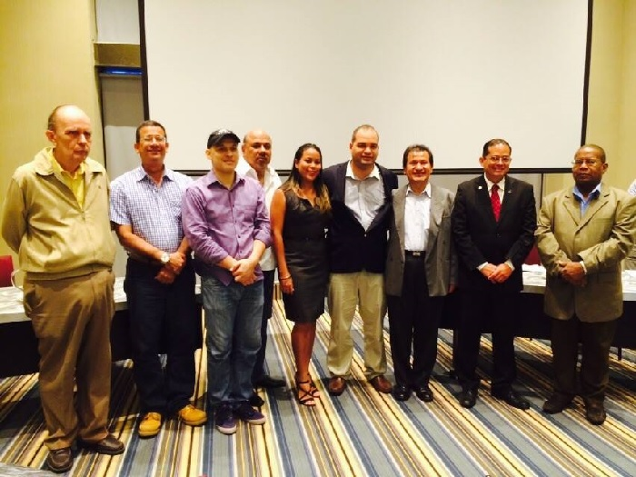</span></p>
<p class="MsoNormal" style="text-align: center;" align="center"><strong><span style="font-size: 14.0pt;" lang="ES-PA">Nueva Junta Directiva de la Federación de Ajedrez de Panamá.</span></strong><strong style="font-size: 12.1599998474121px; line-height: 1.3em;"><span style="font-size: 14.0pt;" lang="ES-PA"> </span></strong></p>
<p class="MsoNormal" style="text-align: center;" align="center"><strong style="font-size: 12.1599998474121px; line-height: 1.3em;"><span style="font-size: 14.0pt;" lang="ES-PA"> </span></strong></p>
<p class="MsoNormal" style="text-align: left;" align="center"><span style="font-size: 14pt; line-height: 15.8079996109009px; text-align: justify;">Posteriormente el presidente electo le hizo entrega al Lic. César Riquelme una placa de reconocimiento por la labor realizada en el ajedrez nacional.</span> </p>
<p class="MsoNormal" style="text-align: center;" align="center"><strong style="font-size: 12.1599998474121px; line-height: 15.8079996109009px;"><span style="font-size: 14.0pt;" lang="ES-PA">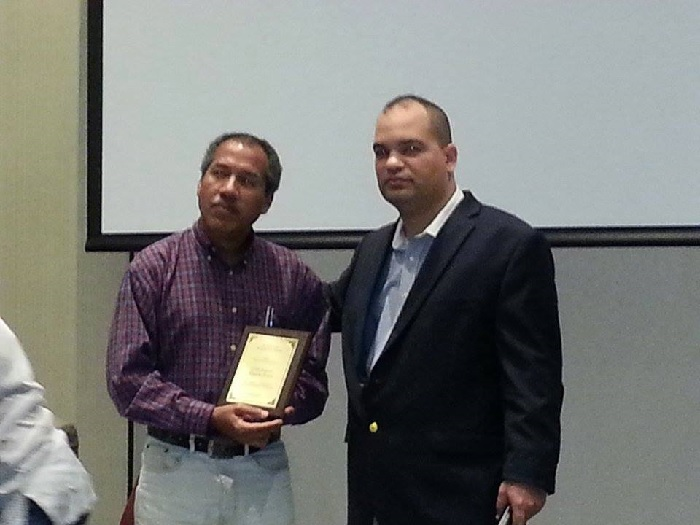</span></strong></p>
<p class="MsoNormal" style="text-align: center;" align="center"><strong style="font-size: 12.1599998474121px; line-height: 15.8079996109009px;"><span style="font-size: 14.0pt;" lang="ES-PA">Placa de reconocimiento a César Riquelme por gran labor realizada.</span></strong><strong style="font-size: 12.1599998474121px; line-height: 15.8079996109009px;"><span style="font-size: 14.0pt;" lang="ES-PA"> </span></strong></p>
<p class="MsoNormal" style="text-align: center;" align="center"> </p>
<p class="MsoNormal" style="text-align: justify;"><span style="font-size: 14.0pt;" lang="ES-PA">También el presidente electo comentó sobre las comisiones de trabajo y sus coordinadores: </span></p>
<p class="MsoNormal" style="text-align: justify;"><span lang="ES-PA"> </span></p>
<table class="MsoNormalTable" style="margin-left: 2.75pt; border-collapse: collapse; mso-table-layout-alt: fixed; mso-padding-alt: 2.75pt 2.75pt 2.75pt 2.75pt;" border="0" cellspacing="0" cellpadding="0">
<tbody>
<tr>
<td style="width: 213.2pt; border: solid black 1.0pt; border-right: none; mso-border-top-alt: solid black .25pt; mso-border-left-alt: solid black .25pt; mso-border-bottom-alt: solid black .25pt; padding: 2.75pt 2.75pt 2.75pt 2.75pt;" valign="top" width="284">
<p class="Contenidodelatabla" style="text-align: center;" align="center"><strong><span style="font-size: 14.0pt;" lang="ES-PA">Comisión </span></strong></p>
</td>
<td style="width: 257.5pt; border: solid black 1.0pt; mso-border-alt: solid black .25pt; padding: 2.75pt 2.75pt 2.75pt 2.75pt;" valign="top" width="343">
<p class="Contenidodelatabla" style="text-align: center;" align="center"><strong><span style="font-size: 14.0pt;" lang="ES-PA">Coordinador(es)</span></strong></p>
</td>
</tr>
<tr>
<td style="width: 213.2pt; border-top: none; border-left: solid black 1.0pt; border-bottom: solid black 1.0pt; border-right: none; mso-border-left-alt: solid black .25pt; mso-border-bottom-alt: solid black .25pt; padding: 2.75pt 2.75pt 2.75pt 2.75pt;" valign="top" width="284">
<p class="Contenidodelatabla" style="text-align: center;" align="center"><span style="font-size: 14.0pt;" lang="ES-PA">Educación</span></p>
</td>
<td style="width: 257.5pt; border: solid black 1.0pt; border-top: none; mso-border-left-alt: solid black .25pt; mso-border-bottom-alt: solid black .25pt; mso-border-right-alt: solid black .25pt; padding: 2.75pt 2.75pt 2.75pt 2.75pt;" valign="top" width="343">
<p class="Contenidodelatabla" style="text-align: center;" align="center"><span style="font-size: 14.0pt;" lang="ES-PA">José Carrillo</span></p>
</td>
</tr>
<tr>
<td style="width: 213.2pt; border-top: none; border-left: solid black 1.0pt; border-bottom: solid black 1.0pt; border-right: none; mso-border-left-alt: solid black .25pt; mso-border-bottom-alt: solid black .25pt; padding: 2.75pt 2.75pt 2.75pt 2.75pt;" valign="top" width="284">
<p class="Contenidodelatabla" style="text-align: center;" align="center"><span style="font-size: 14.0pt;" lang="ES-PA">Finanzas</span></p>
</td>
<td style="width: 257.5pt; border: solid black 1.0pt; border-top: none; mso-border-left-alt: solid black .25pt; mso-border-bottom-alt: solid black .25pt; mso-border-right-alt: solid black .25pt; padding: 2.75pt 2.75pt 2.75pt 2.75pt;" valign="top" width="343">
<p class="Contenidodelatabla" style="text-align: center;" align="center"><span style="font-size: 14.0pt;" lang="ES-PA">Raisa Barría</span></p>
</td>
</tr>
<tr>
<td style="width: 213.2pt; border-top: none; border-left: solid black 1.0pt; border-bottom: solid black 1.0pt; border-right: none; mso-border-left-alt: solid black .25pt; mso-border-bottom-alt: solid black .25pt; padding: 2.75pt 2.75pt 2.75pt 2.75pt;" valign="top" width="284">
<p class="Contenidodelatabla" style="text-align: center;" align="center"><span style="font-size: 14.0pt;" lang="ES-PA">Entrenamiento</span></p>
</td>
<td style="width: 257.5pt; border: solid black 1.0pt; border-top: none; mso-border-left-alt: solid black .25pt; mso-border-bottom-alt: solid black .25pt; mso-border-right-alt: solid black .25pt; padding: 2.75pt 2.75pt 2.75pt 2.75pt;" valign="top" width="343">
<p class="Contenidodelatabla" style="text-align: center;" align="center"><span style="font-size: 14.0pt;" lang="ES-PA">Blass Barría</span></p>
</td>
</tr>
<tr>
<td style="width: 213.2pt; border-top: none; border-left: solid black 1.0pt; border-bottom: solid black 1.0pt; border-right: none; mso-border-left-alt: solid black .25pt; mso-border-bottom-alt: solid black .25pt; padding: 2.75pt 2.75pt 2.75pt 2.75pt;" valign="top" width="284">
<p class="Contenidodelatabla" style="text-align: center;" align="center"><span style="font-size: 14.0pt;" lang="ES-PA">Prensa y Mercadeo</span></p>
</td>
<td style="width: 257.5pt; border: solid black 1.0pt; border-top: none; mso-border-left-alt: solid black .25pt; mso-border-bottom-alt: solid black .25pt; mso-border-right-alt: solid black .25pt; padding: 2.75pt 2.75pt 2.75pt 2.75pt;" valign="top" width="343">
<p class="Contenidodelatabla" style="text-align: center;" align="center"><span style="font-size: 14.0pt;" lang="ES-PA">Bryan Mathews</span></p>
</td>
</tr>
<tr>
<td style="width: 213.2pt; border-top: none; border-left: solid black 1.0pt; border-bottom: solid black 1.0pt; border-right: none; mso-border-left-alt: solid black .25pt; mso-border-bottom-alt: solid black .25pt; padding: 2.75pt 2.75pt 2.75pt 2.75pt;" valign="top" width="284">
<p class="Contenidodelatabla" style="text-align: center;" align="center"><span style="font-size: 14.0pt;" lang="ES-PA">Ciclo Olímpico</span></p>
</td>
<td style="width: 257.5pt; border: solid black 1.0pt; border-top: none; mso-border-left-alt: solid black .25pt; mso-border-bottom-alt: solid black .25pt; mso-border-right-alt: solid black .25pt; padding: 2.75pt 2.75pt 2.75pt 2.75pt;" valign="top" width="343">
<p class="Contenidodelatabla" style="text-align: center;" align="center"><span style="font-size: 14.0pt;" lang="ES-PA">Juan Ramón Collantes</span></p>
</td>
</tr>
<tr>
<td style="width: 213.2pt; border-top: none; border-left: solid black 1.0pt; border-bottom: solid black 1.0pt; border-right: none; mso-border-left-alt: solid black .25pt; mso-border-bottom-alt: solid black .25pt; padding: 2.75pt 2.75pt 2.75pt 2.75pt;" valign="top" width="284">
<p class="Contenidodelatabla" style="text-align: center;" align="center"><span style="font-size: 14.0pt;" lang="ES-PA">Formación</span></p>
</td>
<td style="width: 257.5pt; border: solid black 1.0pt; border-top: none; mso-border-left-alt: solid black .25pt; mso-border-bottom-alt: solid black .25pt; mso-border-right-alt: solid black .25pt; padding: 2.75pt 2.75pt 2.75pt 2.75pt;" valign="top" width="343">
<p class="Contenidodelatabla" style="text-align: center;" align="center"><span style="font-size: 14.0pt;" lang="ES-PA">Agustín Cantilo-Paz</span></p>
</td>
</tr>
<tr>
<td style="width: 213.2pt; border-top: none; border-left: solid black 1.0pt; border-bottom: solid black 1.0pt; border-right: none; mso-border-left-alt: solid black .25pt; mso-border-bottom-alt: solid black .25pt; padding: 2.75pt 2.75pt 2.75pt 2.75pt;" valign="top" width="284">
<p class="Contenidodelatabla" style="text-align: center;" align="center"><span style="font-size: 14.0pt;" lang="ES-PA">Coordinación </span></p>
</td>
<td style="width: 257.5pt; border: solid black 1.0pt; border-top: none; mso-border-left-alt: solid black .25pt; mso-border-bottom-alt: solid black .25pt; mso-border-right-alt: solid black .25pt; padding: 2.75pt 2.75pt 2.75pt 2.75pt;" valign="top" width="343">
<p class="Contenidodelatabla" style="text-align: center;" align="center"><span style="font-size: 14.0pt;" lang="ES-PA">Juan rivera</span></p>
</td>
</tr>
<tr>
<td style="width: 213.2pt; border-top: none; border-left: solid black 1.0pt; border-bottom: solid black 1.0pt; border-right: none; mso-border-left-alt: solid black .25pt; mso-border-bottom-alt: solid black .25pt; padding: 2.75pt 2.75pt 2.75pt 2.75pt;" valign="top" width="284">
<p class="Contenidodelatabla" style="text-align: center;" align="center"><span style="font-size: 14.0pt;" lang="ES-PA">Disciplina</span></p>
</td>
<td style="width: 257.5pt; border: solid black 1.0pt; border-top: none; mso-border-left-alt: solid black .25pt; mso-border-bottom-alt: solid black .25pt; mso-border-right-alt: solid black .25pt; padding: 2.75pt 2.75pt 2.75pt 2.75pt;" valign="top" width="343">
<p class="Contenidodelatabla" style="text-align: center;" align="center"><span style="font-size: 14.0pt;" lang="ES-PA">Alhan Carrera</span></p>
</td>
</tr>
<tr>
<td style="width: 213.2pt; border-top: none; border-left: solid black 1.0pt; border-bottom: solid black 1.0pt; border-right: none; mso-border-left-alt: solid black .25pt; mso-border-bottom-alt: solid black .25pt; padding: 2.75pt 2.75pt 2.75pt 2.75pt;" valign="top" width="284">
<p class="Contenidodelatabla" style="text-align: center;" align="center"><span style="font-size: 14.0pt;" lang="ES-PA">Ratings </span></p>
</td>
<td style="width: 257.5pt; border: solid black 1.0pt; border-top: none; mso-border-left-alt: solid black .25pt; mso-border-bottom-alt: solid black .25pt; mso-border-right-alt: solid black .25pt; padding: 2.75pt 2.75pt 2.75pt 2.75pt;" valign="top" width="343">
<p class="Contenidodelatabla" style="text-align: center;" align="center"><span style="font-size: 14.0pt;" lang="ES-PA">Carlos van der Hans</span></p>
</td>
</tr>
<tr>
<td style="width: 213.2pt; border-top: none; border-left: solid black 1.0pt; border-bottom: solid black 1.0pt; border-right: none; mso-border-left-alt: solid black .25pt; mso-border-bottom-alt: solid black .25pt; padding: 2.75pt 2.75pt 2.75pt 2.75pt;" valign="top" width="284">
<p class="Contenidodelatabla" style="text-align: center;" align="center"><span style="font-size: 14.0pt;" lang="ES-PA">Femenino</span></p>
</td>
<td style="width: 257.5pt; border: solid black 1.0pt; border-top: none; mso-border-left-alt: solid black .25pt; mso-border-bottom-alt: solid black .25pt; mso-border-right-alt: solid black .25pt; padding: 2.75pt 2.75pt 2.75pt 2.75pt;" valign="top" width="343">
<p class="Contenidodelatabla" style="text-align: center;" align="center"><span style="font-size: 14.0pt;" lang="ES-PA">Mery Ceballos/Raisa Barría</span></p>
</td>
</tr>
</tbody>
</table>
<p class="MsoNormal" style="text-align: center;" align="center"><strong><span style="font-size: 14.0pt;" lang="ES-PA">Comisiones de trabajo y sus coordinadores.</span></strong></p>
<p class="MsoNormal" style="text-align: center;" align="center"><span lang="ES-PA"> </span></p>
<p class="MsoNormal" style="text-align: justify;"><span style="font-size: 14.0pt;" lang="ES-PA">Finalmente José Carrillo, presidente electo, presentó las empresas Panama Chess 4 Kids y Chess Logistic, que han contribuido con la enseñanza y masificación del juego ciencia en las diferentes categorías, dándoles la oportunidad a que se presentaran y dieran a conocer su trabajo.</span><span style="font-size: 14pt; line-height: 1.3em;"> </span></p>
<p class="MsoNormal" style="text-align: center;"><span lang="ES-PA"> 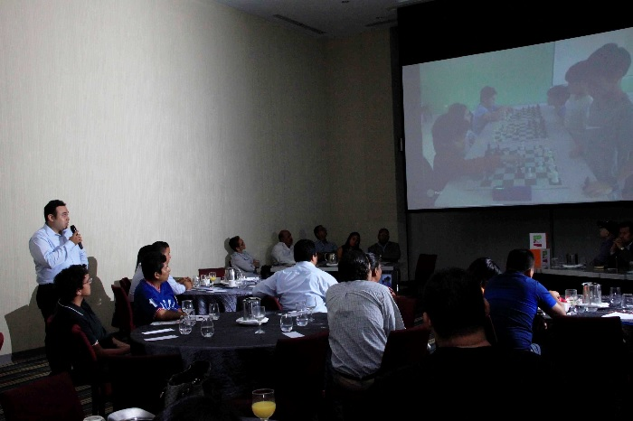</span></p>
<p class="MsoNormal" style="text-align: center;" align="center"><strong><span style="font-size: 14.0pt;" lang="ES-PA">Exposición de César Mathews, representante de Panama Chess 4 Kids</span></strong><strong style="font-size: 12.1599998474121px; line-height: 1.3em;"><span style="font-size: 14.0pt;" lang="ES-PA"> </span></strong></p>
<p class="MsoNormal" style="text-align: center;" align="center"><strong style="font-size: 12.1599998474121px; line-height: 1.3em;"><span style="font-size: 14.0pt;" lang="ES-PA"> </span></strong></p>
<p class="MsoNormal" style="text-align: center;" align="center"><strong><span style="font-size: 14.0pt;" lang="ES-PA"> 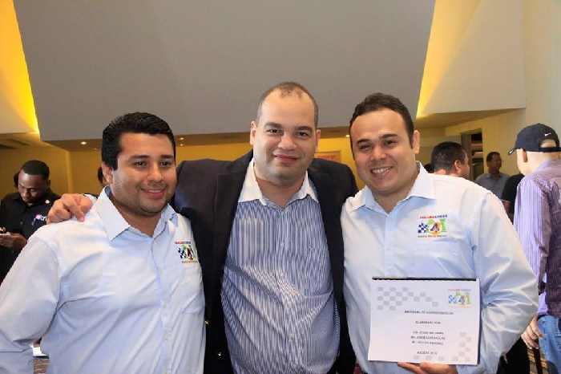</span></strong></p>
<p class="MsoNormal" style="text-align: center;" align="center"><strong><span style="font-size: 14.0pt;" lang="ES-PA">Empresa Panama Chess 4 Kids junto al presidente electo Jose Carrillo.</span></strong></p>
<p class="MsoNormal" style="text-align: center;" align="center"><strong><span style="font-size: 14.0pt;" lang="ES-PA"> </span></strong></p>
<p class="MsoNormal" style="text-align: center;" align="center"> 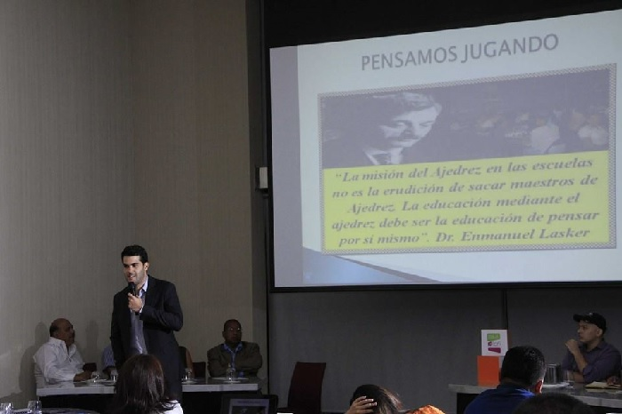</p>
<p class="MsoNormal" style="text-align: center;" align="center"><strong><span style="font-size: 14.0pt;" lang="ES-PA">Exposición del Lic. Roberto Carlos, representante de Chess Logistic.</span></strong></p>
<p class="MsoNormal" style="text-align: center;" align="center"><strong><span style="font-size: 14.0pt;" lang="ES-PA"> </span></strong></p>
<p class="MsoNormal" style="text-align: center;" align="center"><strong><span style="font-size: 14.0pt;" lang="ES-PA"> </span></strong></p>
<p class="MsoNormal" style="text-align: center;" align="center"><strong><span style="font-size: 14.0pt;" lang="ES-PA">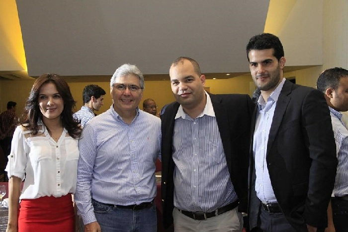</span></strong></p>
<p class="MsoNormal" style="text-align: center;" align="center"><strong><span style="font-size: 14.0pt;" lang="ES-PA">Lic. Mery Ceballos de la Empresa Chess Logistic junto a José Carrillo, el Ing. Irvin Halman y Roberto Carlos Sánchez A.</span></strong></p>
<p class="MsoNormal" style="text-align: justify;"><span lang="ES-PA"> </span></p>
<p class="MsoNormal" style="text-align: justify;"><span style="font-size: 14.0pt;" lang="ES-PA">Una vez terminada las exposiciones de ambas empresas, Jose Carrillo agradeció a las autoridades y al público presente por la asistencia y anunció la fecha de la primera reunión de la Junta Directiva para el 8 de abril en el 6to piso del Hotel Áramo e invito a las empresas de ajedrez y a toda persona que quisiera participar.  </span></p>
<p class="MsoNormal" style="text-align: right;"><span lang="ES-PA">Reportaje: <a href="https://www.facebook.com/bryan.mathews.564" target="_blank" title="Bryan Mathews">Bryan Mathews </a></span></p>
<hr />
<p class="MsoNormal"> </p>
<p class="MsoNormal"><span lang="ES-PA"> </span></p></div>]]></description>
			<author>heroesch@gmail.com (Administrator)</author>
			<category>Destacado</category>
			<category>Inicio / Noticias </category>
			<pubDate>Thu, 02 Apr 2015 16:36:16 +0000</pubDate>
		</item>
	</channel>
</rss>
